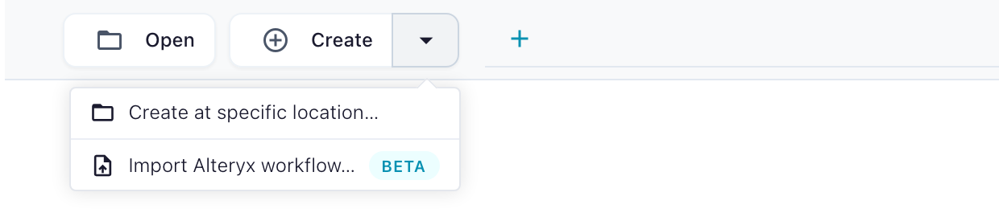
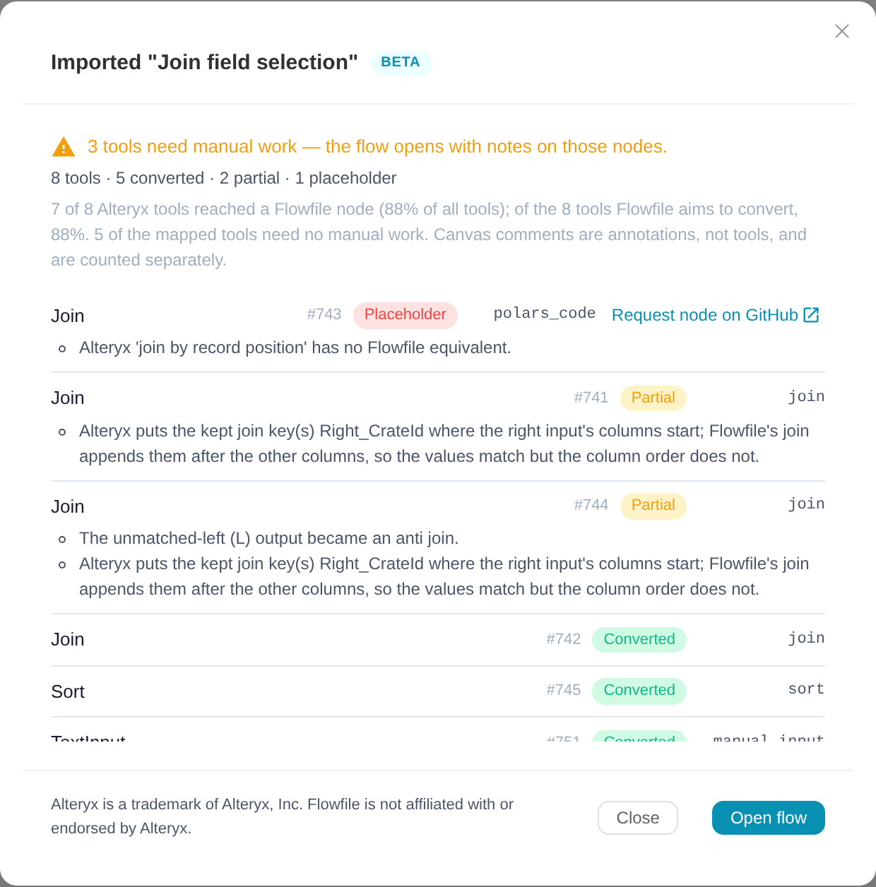
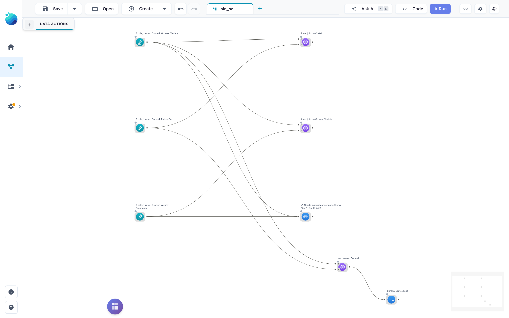
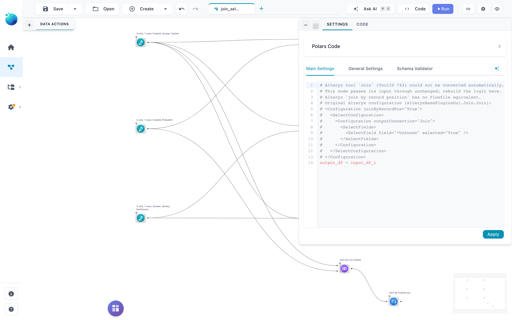

Coming from Alteryx
Flowfile can import an Alteryx Designer workflow (.yxmd) and rebuild it as a Flowfile flow. Every tool becomes a Flowfile node, a piece of generated Polars code, or a clearly marked placeholder, and you get a report that says which is which. Nothing is silently guessed: a tool Flowfile cannot reproduce faithfully is marked, never approximated with a green badge.
How to import
In the app: open the Create dropdown in the header and choose Import Alteryx workflow… (the empty canvas offers the same button), pick a .yxmd file, and read the report before you run the flow.

From the command line:
flowfile import alteryx my_workflow.yxmd
Add --inspect to print the report without writing a flow, --format md for a Markdown table, and a directory instead of a file to import a whole folder:
flowfile import alteryx ./workflows --inspect --format md --out coverage.md
What the report tells you
Every Alteryx tool gets one row with a status:
| Status | Meaning |
|---|---|
converted |
A Flowfile node that does the same thing. Run it. |
partial |
A node was built, but something needs your eye: the message says exactly what (row order, an invented column name, an option Alteryx has and Flowfile does not). |
commented |
The tool's expression could not be translated. The original is kept as a comment inside a stub node so you can rewrite it. |
placeholder |
No Flowfile equivalent. A pass-through node carries the tool's full configuration as comments so you can rebuild it by hand. |
out_of_scope |
Spatial, reporting, Calgary, machine-learning, computer-vision and GenAI tools. Not planned. |
no_op |
Tools with no data effect (Message, Test, Detour). Nothing is emitted. |
Every wire that could not be connected is reported on both of its ends.

Open the flow and the report's notes are on the canvas: a placeholder node carries a visible warning label, and its settings hold the original Alteryx configuration as comments so you can rebuild the step in place.


Coverage, measured
Measured on Alteryx's own 121 One Tool Example workflows (923 tools). Numbers as of Flowfile 0.18.0. Earlier 0.17.x releases ship an older importer that covers fewer tools; upgrade before comparing. Open the sections below for the per-tool detail.
| Tools in scope (everything except the out-of-scope categories above) | 678 |
Mapped to a node (converted + partial + commented) |
559 · 82% |
| Fully converted, no caveat | 409 · 60% |
| Of all 923 tools, mapped | 61% |
| Sample workflows that run end to end without a placeholder in the chain | 39 of 121 |
Tools that convert cleanly on every sample instance
Tools Flowfile converts cleanly on every sample instance: Select, Filter (simple and custom), Formula, Sort, Unique, Summarize, Join, Union, Transpose, Cross Tab, Record ID, Text To Columns, Text Input, Browse, Data Cleansing (both macros), Multi-Field Formula, Dynamic Rename, Date Time, Rank, Imputation, Weighted Average, Random Records, Count Records, Append Fields, API Output.
Tools that convert with a caveat (partial), and why
Tools that convert with a caveat on some or all instances (partial), and why:
| Tool | Why partial |
|---|---|
Input Data (.yxdb) |
Flowfile reads Parquet, not .yxdb. Convert the data first with flowfile convert yxdb (needs pip install 'flowfile[yxdb]'); the node is pre-pointed at the Parquet path. |
| Output Data | Same for .yxdb output; multi-file output is refused. |
| Pearson Correlation, Spearman Correlation | The arithmetic is verified; the output layout and the name of the leading column are Flowfile's. |
| Field Summary, Basic Data Profile | The profile columns are Flowfile's choice. The rendered-report anchors have no Flowfile equivalent. |
| Sample, Select Records, Running Total, Make Group, Rank | Order-dependent. Alteryx's sample workflows rely on arrival order; Flowfile only promises order after an explicit Sort. Converted cleanly when a Sort feeds them. |
| Summarize | First/Last are order-dependent; a few exotic aggregations are generated code. |
| Join | Alteryx's join-select configuration is applied where the source columns are known; otherwise you are told. |
| Union | By-position and manual modes carry a message; by-name converts. |
| Generate Rows | Loops that are a plain numeric or date range convert; a step that depends on a column is refused. |
| Create Samples | Split sizes match; membership differs because the two shuffles are different generators. |
| Date Time Now | One row, evaluated when the flow runs. |
| RegEx | Regex dialects differ; the generated pattern is shown for you to verify. |
| Dynamic Rename (right-input modes) | Resolved at import time when the name source is a Text Input; otherwise refused. |
Tools not converted yet (placeholder)
Not converted (placeholder), by frequency in the samples: Directory, Join Multiple, Blob Convert, Fuzzy Match, XML Parse, Find Replace, Jupyter Code, Multi-Row Formula, Tile, Blob Input, Make Columns, Multi-Field Binning, Arrange, Dynamic Input, Dynamic Select, Dynamic Replace, JSON Parse, Base64 Encoder, Auto Field, Oversample Field. Each placeholder carries the tool's configuration as comments. If one of these blocks a real workflow of yours, open a node request; requests are ranked by how often they come up.
Known limitations
The importer is measured on Alteryx's sample workflows, not on production ones. These are the gaps we know about and have not closed:
- Numbers are checked against Alteryx's own comment boxes, not against Designer. One real-world workflow has been verified frame-equal end to end. Where a sample workflow states an expected value, the converted flow reproduces it; where it does not, nothing has been compared.
- Row order. Alteryx's sample workflows rely on arrival order; Flowfile does not promise it without a Sort. Tools that depend on it are marked
partialunless a Sort feeds them. - Nulls in correlations. Pearson's grid turns a variable with any null into NaN; covariance and Spearman drop the pair. Alteryx's rule is not stated anywhere we could check. Covariance divides by n−1; Alteryx's divisor is unrecorded.
- A fixed date in a simple-mode Filter is compared as text. On a real date column that raises at run time. Fix: use a formula filter, or convert the column first.
- Rank tie rules (Standard, Competition) and Sample's Random and First-N-percent modes are not built; the sample workflows describe their behaviour and the nodes are refused until built.
- Cross Tab column names: the sample workflows show Alteryx replacing special characters with underscores; Flowfile keeps the raw values. No golden output has been compared yet.
- Fuzzy Match is not built. The placeholder tells you how to rebuild it with Flowfile's Fuzzy Match node (mode, field, threshold), and warns that the matches will differ: Alteryx's default match style is a TF-IDF-weighted scorer with its own text pre-processing, while Flowfile's node scores plain Jaro similarity.
- Regex patterns are compiled by Polars' engine at import time; lookaround and backreferences are refused, everything else is shown for you to verify.
- MD5 and Base64.
MD5_UTF8and both Base64 functions map exactly;MD5_ASCIIandMD5_UNICODEhash different bytes and are refused. - Macros and wizards (
.yxmc,.yxwz) are imported for their data tools; control wires and questions are not reproduced. .yxdbfiles written by the AMP engine cannot be converted; only the original-engine format is read. Turn off Use AMP Engine in the workflow's Runtime settings and write the file again, or output CSV.- Comments travel as text only; colours, fonts and shapes are dropped.
- Text Input dates. A Text Input column whose cells are all
yyyy-MM-ddoryyyy-MM-dd HH:mm:ssis typed Date or Datetime, as the sample workflows show Alteryx doing. Padded cells are trimmed first, a code column that happens to hold dates is typed too, andHH:mm:ssstays text because Flowfile has no Time column. A Formula that parses such a column withDateTimeParseraises, because the column is already a date.
If you hit something not on this list, that is the report we want: open an issue with the report row and, if you can, the tool's configuration.
Alteryx is a trademark of Alteryx, Inc. Flowfile is an independent project and is not affiliated with, sponsored by or endorsed by Alteryx, Inc. The importer reads workflow files you own; it contains no Alteryx software.